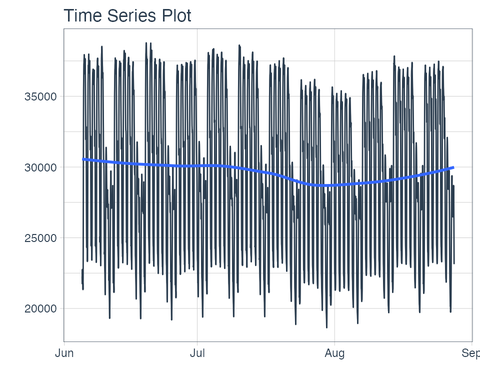
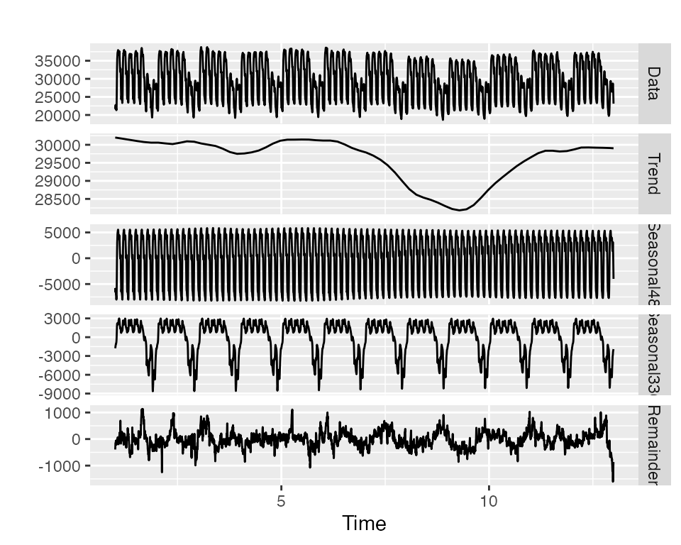
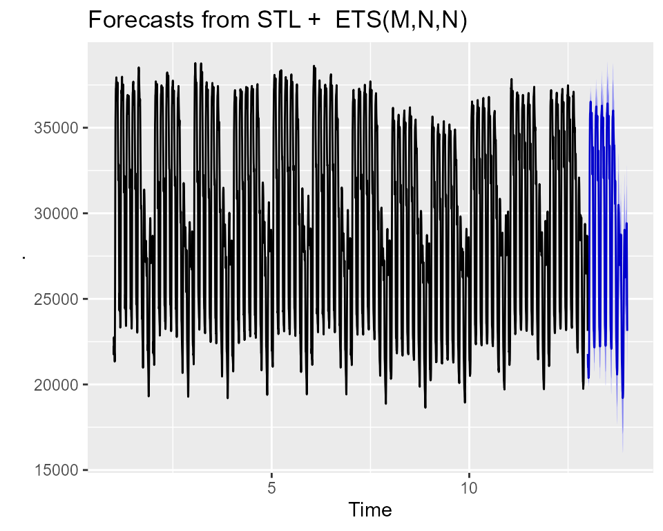
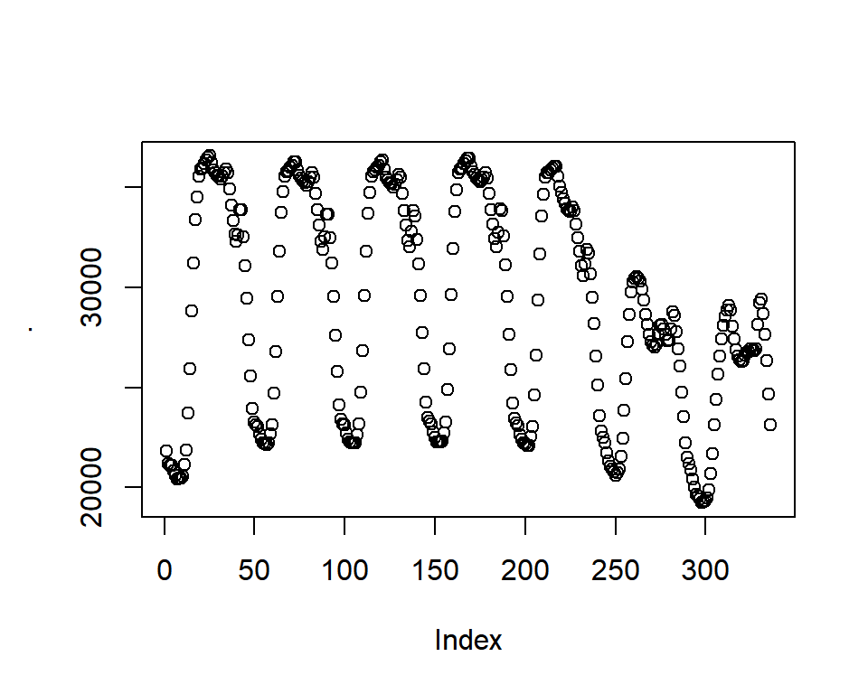
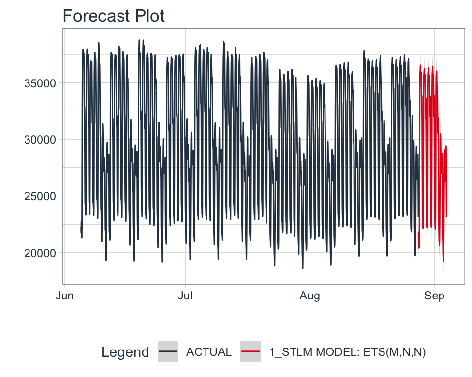

vignettes/extending-modeltime.Rmd
extending-modeltime.RmdThe modeltime package was with extensibility in mind. It’s impossible to incorporate the entire R time series ecosystem into a single package. More than likely your going to need something that hasn’t been included yet. And, if you’re a developer, I challenge you to extend modeltime to suit your needs. I’ve spent a lot of time thinking about:
tidymodels)And, I want you to leverage what has been built so you don’t have to recreate the wheel.
Beyond being an amazing ecosystem for Machine Learning analysis in R, tidymodels is a developer-friendly infrastructure that enables parsnip-adjacent packages like modeltime. The ecosystem provides basic building blocks for extending machine learning models, tuning parameters, performance metrics, and preprocessing (feature engineering) tools. Before you start building, I highly recommend reviewing these resources:
The most important is the first resource - “How to build a parsnip model”.
The forecast package includes the stlm() function for creating models using time series decomposition. It’s a great approach based on the concept that you can decompose complex seasonality into multiple components:
We can then forecast the components using models like: auto.arima() and ets().
Note - I’ve added a seasonal_reg() function that includes the functionality we are about to create. Check that function out to see more about seasonal decomposition methods.
We’ll use taylor_30_min data from the timetk package, which is electricity demand data at a 30-minute interval.
taylor_30_min %>%
plot_time_series(date, value, .interactive = FALSE)
We need to use 2 functions to create the model:
msts() - Tracks the multiple-seasonality as an objectstlm() - Creates a model from the msts object.Note that we use seasonal periods (24*2 = 48) for daily seasonality because this series has been aggregated at a 30-minute interval. The second seasonality is at 7-days, so we just use 24*2*7.
stlm_model <- taylor_30_min %>%
pull(value) %>%
msts(seasonal.periods = c(24*2, 24*2*7)) %>%
stlm()
stlm_model$stl %>% autoplot()
The forecast() function is used to generate predictions, much like the predict() function.

Looks like it’s doing a pretty decent job of forecasting the Taylor 30-Min Data.
The first step we need to do is to think about the function. We can create:
msts(): Creates a multiple time series object. Key arguments: seasonal.periods.stlm(): Creates the Multiple STL Model. Key arguments:
method: Either ets or arima (actually uses auto.arima)ets version.We could add others, but let’s keep it simple for now.
We follow a very similar process to “How to build a parsnip model” with a few additional aspects:
parsnip api functions and forecast time series.Let’s add a new model called decomposition_reg() for Regression by Decomposition. Because Time Series analysis is generally regression, we’ll just register the regression mode.
set_new_model("decomposition_reg")
set_model_mode(model = "decomposition_reg", mode = "regression")
set_model_engine(model = "decomposition_reg", mode = "regression", eng = "stlm_ets")
# Here we set the dependency to forecast, though we can also use
# your package if you import the lower level package
set_dependency(model = "decomposition_reg", eng = "stlm_ets", pkg = "forecast")We can use show_model_info() to see what’s been added to the registered model.
show_model_info("decomposition_reg")
#> Information for `decomposition_reg`
#> modes: unknown, regression
#>
#> engines:
#> regression: stlm_ets
#>
#> no registered arguments.
#>
#> no registered fit modules.
#>
#> no registered prediction modules.We need to add model arguments as well. We’ll use set_model_args() to add the appropriate model arguments.
# 1st Frequency (period_seasonal_1 is a non-jargony term)
set_model_arg(
model = "decomposition_reg",
eng = "stlm_ets",
parsnip = "period_seasonal_1",
original = "period_seasonal_1",
func = list(pkg = "foo", fun = "bar"),
has_submodel = FALSE
)
# 2nd Frequency (period_seasonal_2 is a non-jargony term)
set_model_arg(
model = "decomposition_reg",
eng = "stlm_ets",
parsnip = "period_seasonal_2",
original = "period_seasonal_2",
func = list(pkg = "foo", fun = "bar"),
has_submodel = FALSE
)Important note: We are going to map these “modeltime” arguments to a lower-level bridge function, so we don’t need original = seasonal.periods. In fact, we can’t do this because you need to have a one-to-one relationship between your parsnip/modeltime model arguments and the lower-level modeling function.
We’ll create a decomposition_reg() function that will be our core parsnip function.
decomposition_reg <- function(mode = "regression",
period_seasonal_1 = NULL,
period_seasonal_2 = NULL) {
args <- list(
period_seasonal_1 = rlang::enquo(period_seasonal_1),
period_seasonal_2 = rlang::enquo(period_seasonal_2)
)
parsnip::new_model_spec(
"decomposition_reg",
args = args,
eng_args = NULL,
mode = mode,
method = NULL,
engine = NULL
)
}For Time Series models, we need to do extra work to get them to fit the parsnip mold. The easiest way is to create a “Bridge” function that helps process the data and connect the arguments with the underlying time series package.
Time Series Developer Tools come included with modeltime:
new_modeltime_bridge(), A constructor for creating modeltime bridges that provide the connection between time series models and the parsnip infrastructure.create_xreg_recipe(), juice_xreg_recipe(), and bake_xreg_recipe()
parse_index_from_data(), parse_period_from_index()
Here’s a sample bridge function. It:
x (data.frame of predictors) and y (vector, target)x
ets() model is univariate, so no predictors are necessary to be transformed.new_modeltime_bridge()
bridge_stlm_ets_fit_impl <- function(x, y, period_seasonal_1 = NULL, period_seasonal_2 = NULL, ...) {
outcome <- y # Comes in as a vector
predictors <- x # Comes in as a data.frame (dates and possible xregs)
# 1. Create outcome msts object by mapping `period_seasonal` args to msts()
if (is.null(period_seasonal_1) || period_seasonal_1 <= 1) {
stop("'period_seasonal_1' must be greater than 1 to assess seasonality")
} else if (is.null(period_seasonal_2) || period_seasonal_2 <= 1) {
seasonal.periods <- period_seasonal_1
} else {
seasonal.periods <- c(period_seasonal_1, period_seasonal_2)
}
outcome_msts <- forecast::msts(outcome, seasonal.periods = seasonal.periods)
# 2. Predictors - Handle Dates
index_tbl <- modeltime::parse_index_from_data(predictors)
idx_col <- names(index_tbl)
idx <- timetk::tk_index(index_tbl)
# 3. Predictors - Handle Xregs
# NOT REQUIRED - ETS is univariate
# REQUIRED FOR ARIMA - ARIMA can accept XRegs
# xreg_recipe <- create_xreg_recipe(predictor, prepare = TRUE)
# xreg_matrix <- juice_xreg_recipe(xreg_recipe, format = "matrix")
# 4. Fitting
model_1 <- forecast::stlm(y = outcome_msts, method = "ets", ...)
# 5. New Modeltime Bridge
new_modeltime_bridge(
class = "bridge_stlm_ets_fit_impl",
models = list(model_1 = model_1),
data = tibble::tibble(
idx_col := idx,
.actual = y,
.fitted = model_1$fitted,
.residuals = model_1$residuals
),
extras = list(NULL), # Can add xreg preprocessors here
desc = stringr::str_c("STLM Model: ", model_1$model$method)
)
}We’ll make a quick print method so we don’t get crazy output.
print.bridge_stlm_ets_fit_impl <- function(x, ...) {
model <- x$models$model_1$model
cat(x$desc)
cat("\n")
print(model$call)
cat("\n")
print(
tibble(
aic = model$aic,
bic = model$bic,
aicc = model$aicc,
loglik = model$loglik,
mse = model$mse
)
)
invisible(x)
}Let’s make sure our bridge works.
stlm_test <- bridge_stlm_ets_fit_impl(
x = taylor_30_min[,"date"],
y = taylor_30_min %>% pull(value),
period_seasonal_1 = 24*2,
period_seasonal_2 = 24*2*7
)
stlm_test
#> STLM Model: ETS(M,N,N)
#> ets(y = x, model = etsmodel, allow.multiplicative.trend = allow.multiplicative.trend)
#>
#> # A tibble: 1 x 5
#> aic bic aicc loglik mse
#> <dbl> <dbl> <dbl> <dbl> <dbl>
#> 1 70492. 70510. 70492. -35243. 9733.The bridge looks good.
Next, let’s hook up our parsnip fit module to the newly created bridge fit function.
set_fit(
model = "decomposition_reg",
eng = "stlm_ets",
mode = "regression",
value = list(
interface = "data.frame",
protect = c("x", "y"),
func = c(fun = "bridge_stlm_ets_fit_impl"),
defaults = list()
)
)
show_model_info("decomposition_reg")
#> Information for `decomposition_reg`
#> modes: unknown, regression
#>
#> engines:
#> regression: stlm_ets
#>
#> arguments:
#> stlm_ets:
#> period_seasonal_1 --> period_seasonal_1
#> period_seasonal_2 --> period_seasonal_2
#>
#> fit modules:
#> engine mode
#> stlm_ets regression
#>
#> no registered prediction modules.Next, we have an additional step to bridge the prediction. We create a predict method that handles the new_data, treating the number of rows as the forecasting horizon.
predict.bridge_stlm_ets_fit_impl <- function(object, new_data, ...) {
# PREPARE INPUTS
model <- object$models$model_1
h_horizon <- nrow(new_data)
# XREG
# NOT REQUIRED FOR ETS.
# xreg_recipe <- object$extras$xreg_recipe
# xreg_matrix <- bake_xreg_recipe(xreg_recipe, new_data, format = "matrix")
# PREDICTIONS
preds_forecast <- forecast::forecast(model, h = h_horizon)
# Return predictions as numeric vector
preds <- as.numeric(preds_forecast$mean)
return(preds)
}Let’s test the predict() method out. To help, I’ll leverage future_frame() to predict the next 3-hours worth of forecast points.
stlm_test %>%
predict(new_data = taylor_30_min %>% future_frame(.length_out = "1 week")) %>%
plot()
Excellent. We have predictions!
We’re now ready to register the prediction function we’ve created.
set_pred(
model = "decomposition_reg",
eng = "stlm_ets",
mode = "regression",
type = "numeric",
value = list(
pre = NULL,
post = NULL,
func = c(fun = "predict"),
args =
list(
object = rlang::expr(object$fit),
new_data = rlang::expr(new_data)
)
)
)
show_model_info("decomposition_reg")
#> Information for `decomposition_reg`
#> modes: unknown, regression
#>
#> engines:
#> regression: stlm_ets
#>
#> arguments:
#> stlm_ets:
#> period_seasonal_1 --> period_seasonal_1
#> period_seasonal_2 --> period_seasonal_2
#>
#> fit modules:
#> engine mode
#> stlm_ets regression
#>
#> prediction modules:
#> mode engine methods
#> regression stlm_ets numericWe need to modify how parnsip handles features because date and date-time information cannot be processed by model.frame() (default behavior). We use set_encoding() to ensure the predictors are processed without any preprocessing. We’ll handle all preprocessing in our fit model bridge, bridge_stlm_ets_fit_impl() (shown next).
parsnip::set_encoding(
model = "decomposition_reg",
eng = "stlm_ets",
mode = "regression",
options = list(
predictor_indicators = "none",
compute_intercept = FALSE,
remove_intercept = FALSE,
allow_sparse_x = FALSE
)
)The moment of truth is upon us! Let’s test this new modeltime function out.
We’ll split the data into training and test sets.
splits <- initial_time_split(taylor_30_min, prop = 0.9)Then create a model on the training set.
model_fit <- decomposition_reg(
period_seasonal_1 = 24*2,
period_seasonal_2 = 24*2*7
) %>%
set_engine("stlm_ets") %>%
fit(value ~ date, data = training(splits))
model_fit#> parsnip model object
#>
#> Fit time: 194ms
#> STLM Model: ETS(M,N,N)
#> ets(y = x, model = etsmodel, allow.multiplicative.trend = allow.multiplicative.trend)
#>
#> # A tibble: 1 x 5
#> aic bic aicc loglik mse
#> <dbl> <dbl> <dbl> <dbl> <dbl>
#> 1 63151. 63170. 63151. -31573. 10019.Next, let’s calibrate the fitted model.
calibration_tbl <- model_fit %>%
modeltime_table() %>%
modeltime_calibrate(new_data = testing(splits))
calibration_tbl
#> # Modeltime Table
#> # A tibble: 1 x 5
#> .model_id .model .model_desc .type .calibration_data
#> <int> <list> <chr> <chr> <list>
#> 1 1 <fit[+]> STLM MODEL: ETS(M,N,N) Test <tibble [404 × 4]>We’ll refit on the full dataset.
refit_tbl <- calibration_tbl %>%
modeltime_refit(data = taylor_30_min)Then forecast forward 1 week.
refit_tbl %>%
modeltime_forecast(h = "1 week", actual_data = taylor_30_min) %>%
plot_modeltime_forecast(.interactive = FALSE)
And now you’ve just created a new model. Just wrap it up in a package and you’ve extended parsnip and modeltime. Congrats!